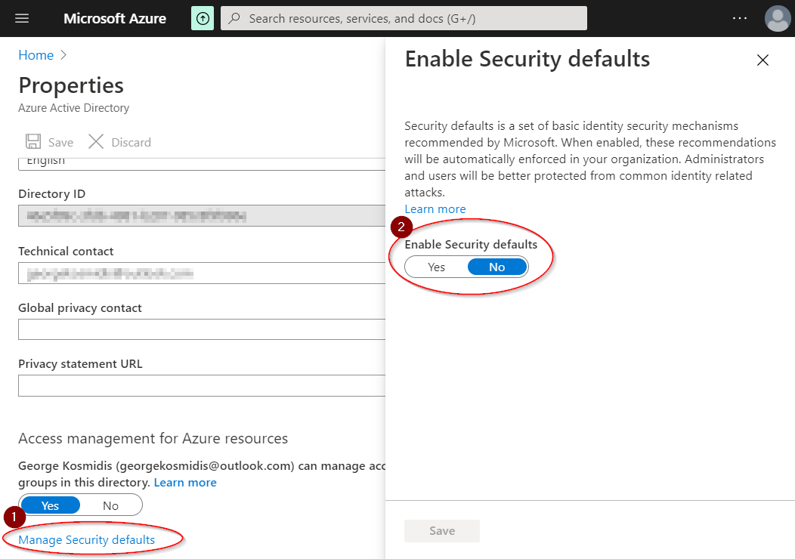

The message can appear in any service trying to retrieve active Azure Resources either within Azure Portal or from any 3rd party consumer. As an example, it can appear while trying to create an Azure Resource Manager service connection in Azure DevOps.
The reasons found so far are the following three:
Details about three possible solutions for each problem follow.
Navigate to Azure portal to check if your subscription status is active. Use the address https://portal.azure.com/#blade/Microsoft_Azure_Billing/SubscriptionsBlade and check the list:
Either clear all your browser cookies, switch to another browser or use “InPrivate” mode. The last one is the quickest and easiest approach.
Last but not least, go to portal.azure.com, search for “Tenant properties” and disable Security defaults:

The post Troubleshooting “You don’t appear to have an active Azure subscription.” first appeared on George Kosmidis.